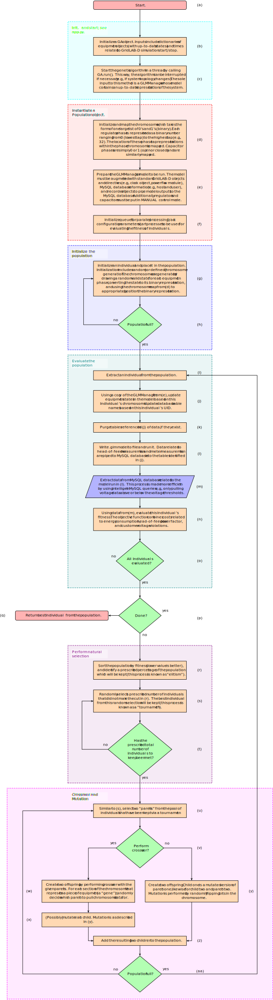

How PyVVO Works¶
This section will provide an overview of how PyVVO works by walking through various flow charts. At times, specific Python modules or classes will be referenced. In addition to examining the source code itself, the API is documented in the PyVVO Code section.
PyVVO is highly configurable. To keep this documentation maintainable and avoid repeating information, the configurable fields will not be covered in detail here. Instead, check out this section in the repository’s top-level README file.
Additionally, PyVVO emits logs a significant amount of information as it runs. Many of PyVVO’s log messages are described in this section of the top-level README.
Flow Chart Conventions¶
The example flow chart below presents the conventions that will be used
throughout this documentation. Note that all flow charts are vector
images (specifically, .svg), so you can zoom in on them without
making them blurry. While reading the documentation, it will probably
be most useful if you open up each flow chart in a second window and
position it side by side this documentation.
Technical Details¶
If the flow charts are rendering well for you and include text, no need to read this section.
If you cannot see any text on the flow charts or they don’t render
correctly, you’re likely using an archaic web browser. Please either
update your browser or switch to a modern one (e.g., Firefox). The
.svg files have the fonts embedded in WOFF 2.0 format
(published as a W3C recommendation
in 2018) by dvisvgm.
High Level Summary¶
At the highest level, PyVVO contains two important components: data-driven predictive load modeling and a genetic algorithm. The load models are layered onto a GridLAB-D model, and resulting GridLAB-D simulation outputs are used in the genetic algorithm’s optimization process.
Main Loop¶
The following image depicts a flow chart of the operation of app.py
(pyvvo.app). Boxes prefaced with INCOMPLETE indicate that
more work is needed to finalize the code related to the process
described in the box.
As noted in (a), when PyVVO is running inside the
GridAPPS-D platform, it’s started by run_pyvvo.py
(pyvvo.run_pyvvo).
Initialization Phase¶
When PyVVO is started, it only receives two inputs from the platform: the simulation ID and the (simulation request) (b). The simulation request contains many useful details including, but not limited to, the feeder’s MRID, the time span of the simulation, etc.
PyVVO uses the information from (b) to initialize a
variety of classes whose role is to interface with the GridAPPS-D
platform (c). These classes can be found in
pyvvo.sparql and pyvvo.gridappsd_platform.
Since PyVVO is a volt-var optimization application, it primarily cares
about regulators and capacitors (future work should include control of
other devices). However, since PyVVO is model-based, it also needs to
know about other active devices in the system such as photovoltaic
inverters, distributed generators, and switches. PyVVO uses the
SPARQLManager (initialized in (c)) to query
the GridAPPS-D platform’s Common Information Model
(CIM)
triplestore database to obtain nominal device information
(c). Additionally, information about the
measurement objects (e.g., their MRIDs, measurement types, etc.)
associated with the each device is pulled from the CIM triplestore.
With device and measurement information in hand, PyVVO can initialize
objects that represent all the equipment in the system that PyVVO cares
about (e). PyVVO has various classes related to the
management of devices (a.k.a. “equipment”) in pyvvo.equipment.
These classes generally contain a small subset of what’s contained in
the (CIM).
Subscribing to simulation output
is like drinking from a fire hose, so PyVVO has the SimOutRouter class
(pyvvo.gridappsd_platform.SimOutRouter) which filters
simulation output and calls methods of the equipment classes that keep
their states up to date (f). All state
updates/subscriptions occur in their own threads, so object states are
immediately updated whenever new measurements come in.
PyVVO uses GridLAB-D (Wiki,
GitHub) as its power flow solver/simulator, and the
GridAPPS-D platform is capable of creating a GridLAB-D model from the
CIM triplestore for its own simulations. PyVVO leverages this fact and
requests a model of the
power system in GridLAB-D (.glm) format (g),
representing the nominal state of the system.
Next, PyVVO initializes a GLMManager
(pyvvo.glm.GLMManager) (h) using the
.glm file pulled in (g). The GLMManager
creates an in-memory representation of the model using Python data
types, and is capable of modifying the model and writing out a new
.glm file. The module pyvvo.glm could come in handy for
other GridAPPS-D applications, or any application that needs to read,
modify, and write GridLAB-D models. The code isn’t perfect and has some
shortcomings, but also has a lot of features and functionality.
Next, PyVVO begins the process of load modeling by pulling historic meter data from the GridAPPS-D platform’s timeseries database (i). Specifically, historic data should come from the platform’s sensor service. As discussed in Outstanding Work, Known Issues, Future Work and noted in the flow chart, this portion of PyVVO is currently incomplete due to platform issues.
Weather data is incorporated in PyVVO’s load modeling process. This
data is obtained by
querying the platform
(j). Once obtained, the weather data must
be parsed and resampled so that it matches up 1:1 with the meter data
in (i). See
pyvvo.timeseries.parse_weather() and
pyvvo.timeseries.resample_timeseries().
Optimization Phase¶
First of all, note there is some overlap in the “Initialization” and “Optimization” phases due to loop priming.
After all procedures described in Initialization Phase have been completed,
PyVVO enters its optimization loop. The first step in this process is
to update PyVVO’s internal .glm model of the power system with the
current states of all equipment (l). Future
work might use predicted future states rather than current states.
Next, PyVVO initializes all the required objects for running the genetic
algorithm (m). The genetic algorithm components are fully
encapsulated in pyvvo.ga. As noted in the flow chart, a
GAStopper object is used for stopping the genetic algorithm
prematurely based on system events. At present, this only includes
switches changing state (though future work <todo> should include
other conditions). If the genetic algorithm were not halted due to a
topology change, it would continue optimizing, but its internal model
would no longer represent reality, making the result wrong/suboptimal
(and perhaps dangerous to the health of the system).
The internal workings of the genetic algorithm itself are rather complex, so discussion here will be limited to what’s already mentioned in (n). More details can be found in Genetic Algorithm.
After the genetic algorithm has run to completion, PyVVO has an idea of how controllable devices should be operated (e.g., regulators and capacitors). These proposed device settings are sent into the platform as commands (e.g. put regulator 1, phase A at tap 3) (o). PyVVO only sends in commands for proposed states that are different from the current state. In this way, if the proposed states are identical to the present states (indicating the system is already in an “optimal” configuration), no commands are sent into the system.
Note that (p) is flagged with INCOMPLETE. This is because at present, PyVVO simply runs the optimization loop indefinitely and only stops when its Docker container is killed. PyVVO doesn’t presently require any particular clean-up procedures, hence why (q) is so simple.
Load Modeling¶
Overview¶
PyVVO uses “smart” meter data to create time varying predictive load models. These models get layered onto a GridLAB-D model for use in the Genetic Algorithm.
While there are many, many types of load models, PyVVO attempts to keep things simple and uses the ZIP load model. The ZIP load model represents a load (or a collection of loads) as part constant impedance (Z), part constant current (I), and part constant power (P). PyVVO uses the ZIP load model for several reasons:
ZIP load models have a voltage dependency, which is important for model-based voltage control applications.
ZIP load models are included in as part of every distribution system simulator under the sun.
ZIP load models are physics-based, as opposed to “black box” models.
ZIP load models only have a handful of parameters, making curve-fitting less time consuming.
For more details, please see our HICSS paper.
Flow Chart and PyVVO Modules¶
The image below depicts a flow chart of the operation of PyVVO’s load modeling. The entire procedure spans several modules (presented here in alphabetical order):
pyvvo.clusterfor data clustering operationspyvvo.gridappsd_platformfor pulling data from the GridAPPS-D platformpyvvo.load_modelfor pulling all the pieces together from the different modulespyvvo.timeseriesfor parsing and resampling raw data from the platformpyvvo.zipfor curve-fitting data to create ZIP load models
The procedures described in the flow chart above can be kicked off by
instantiating a pyvvo.load_model.LoadModelManager object
and then calling the fit_for_all method. Note that the meta data
described in (c) are required inputs for
initializing a LoadModelManager. Also note that the load_model
module and associated code are in need of some more work, testing,
documentation, and attention.
Generally speaking, the flow chart above speaks for itself. However, some items that are worth elaborating on:
As per usual, many of the parameters (e.g. \(M_{cs}\)) are configurable. If the parameters aren’t already in
pyvvo.json, they can easily be added and documented.At the time of writing, the data standardization in (j) scale is unnecessarily done inside the clustering and fitting loop. With some moderate refactoring, this can be fixed.
K-means clustering in (k) is performed via Scikit-learn’s implementation.
Note that voltage (\(V\)) is not used in clustering, because clustering by voltage will lead to a poorly performing ZIP model. The ZIP load model takes voltage magnitude as input and outputs \(P\) and \(Q\). Therefore, it behooves us to have diverse voltage values in the data used for fitting, which would be undercut by including voltage as a clustering feature.
In (l), weather data is exclusively used as cluster selection features. This is a heuristic assumption based on the load/weather dependence that all power systems engineers are well aware of. This has not necessarily been proven to be the best approach in all scenarios, and in fact we’ve seen that at times a better fit can be obtained by including \(P\) and \(Q\) in the cluster selection.
Similarly, we do not have a guarantee that our “best” cluster necessarily leads to the “best” fit. However, it would be very computationally expensive to perform a ZIP fit on every cluster. On the other hand, maybe that approach would be worthwhile. There is a wealth of experimentation that can still be done.
The least squares optimization routine mentioned in (m) is moderately complex. It’s worth exploring this code in detail. Simply follow the rabbit hole starting with
pyvvo.zip.zip_fit().The final ZIP model that comes out of (m) uses GridLAB-D conventions. A thorough examination of the GridLAB-D source code was undertaken to ensure exact concurrence. There are tests to prove it in
tests/test_zip.py.The reason for using a normalized MSE in (o) is that different clustering loop runs will have a different number of data points present in the “best” cluster, resulting in very different raw MSE values.
Note that equal weight is given to \(\text{MSE}_P\) and \(\text{MSE}_Q\) in the \(\text{MSE}_\text{norm}\) computation in (o). It may be valuable to experiment with different weighting schemes.
Outstanding Work and Possible Issues¶
The GridAPPS-D platform has struggled to put together a working sensor
service, and the timeseries database and its API have been plagued by
bugs. Additionally, memory leaks and other issues have prevented the
platform from running for a prolonged time to generate historic data
for the load modeling. As such, PyVVO’s load modeling procedures have
not been fully integrated into app.py and load_model.py has
several outstanding issues.
Fortunately, the underlying clustering and fitting code is complete (at least in a working and tested draft form), and most of the remaining work involves finalizing the touch points between PyVVO and the platform with respect to load modeling.
It would be prudent to walk through the entire clustering and fitting process with an eye toward performance optimization. There are many loads in the so called “9500 node” model (~1300) and getting the required data for each load requires 4 different measurement objects (as mentioned in (d) in the flow chart).
I (Brandon) suspect that the load modeling procedure is going to run into bottlenecks with respect to both I/O from the platform as well as computation.
With respect to I/O: queries to the timeseries database have to date been very slow, and message size and/or memory issues means that it may be necessary to perform a single query for each load (or maybe even for each measurement!) which comes with a lot of overhead. Additionally, due to the primitive filtering available through the GridAPPS-D API, there are two options for time filtering:
Pull all historic data at once (e.g., all data for a two week window) and filter it afterwards. Ultimately, PyVVO is only going to use something like < 1/10 of the pulled data, so this is clearly inefficient.
Perform lots of little queries for the the various time windows. E.g., perform ten queries to pull data from 9:00am-11:00am for two weeks worth of weekday data. This clearly comes with a lot of overhead.
While it may go against the API-only “principles” of GridAPPS-D, the best solution would be to query the timeseries database directly and create moderately complex custom time filters. This could be done through the API if a “custom query” route was created, similarly to the SPARQL API.
It’s also worth noting that if the historic data is ever generated at the correct averaging interval by the sensor service (e.g., 15 minutes), all the load data for a particular time window might fit into memory with a single query. Again, you’re likely going to run into maximum message size issues with the platform, although the database itself would be totally happy to hand you all that data at once.
Finally, some thoughts on parallelization: depending on how the platform API and database infrastructure are implemented, querying the database in parallel on the application side may not result in truly parallel queries on the platform side. E.g., if the database queries are multi-threaded instead of multi-processed, you won’t actually get true concurrency, just the “fake” concurrency that threading provides.
With respect to computation: The bottom line is there are a lot of loads, and for each load multiple clustering operations and sequential least squares optimization operations are run. That’s a lot of computation. The good news is that this is completely parallelizable. GridAPPS-D as a project is emphasizing distributed applications, so splitting out the load modeling into its own app could be a very valuable use case. This would also be useful for other applications that rely on load models, such as WSU’s VVO application.
There are also a lot of tweaks that can be made to potentially speed up the load modeling process. For example, increasing the minimum cluster size \(M_{cs}\) in (i) will decrease the number of clustering loops that are performed, at the cost of less exploration. Additionally, the least-squares optimization could potentially be sped up by using the previous fit parameters as a starting point for the next optimization run. There are likely lots of other little levers such as these that could help alleviate the computation bottleneck.
If you’re feeling lazy and have the computational resources, just throw more cores at the problem. However, depending on how you get the data, you might run into I/O bottlenecks (as discussed in the IO issues section.
If you are feeling really blasphemous and are okay flying in the face of all the load modeling work that’s been done for this application, you could do something as simple (and likely very, very suboptimal) as use state estimator \(P\) and \(Q\) output for each load and model them all as constant power (or constant current or constant impedance or with arbitrary ZIP parameters). Please don’t do this.
Yet another intriguing option would be to aggregate loads up to the distribution transformer level. In short, one would need to model the voltage drop and losses across the “triplex” lines, and then aggregate at the historic data at transformer level. This aggregated data could then go through the same ZIP fit procedure described here. However, you lose some important information: what’s the voltage at each meter? It’s feasible that downstream of one secondary transformer there’s one meter within the allowed voltage band and one outside the allowed voltage band. How often does this happen? Hard to say.
Genetic Algorithm¶
Brandon ran out of time to write about the genetic algorithm in detail, but fortunately there’s this nifty flow chart:
Note that many genetic algorithm parameters are controlled in
pyvvo_config.json. Specifically, have a look at the ga,
limits, and costs keys. Discussion of these parameters is
covered in the README.
It’s pretty easy to follow along in the code with the flow chart in
hand. If you’re using PyCharm, Ctrl + B is going to be your best
friend for jumping into methods as you follow the rabbit hole. As
seen in (b) and (c), the algorithm is
kicked off in app.py. From there, you can sift through ga.py
to find everything you need.
Note that right now, stopping the algorithm is ill-defined (q). It just runs for a fixed number of generations. Ideally, some sort of convergence criteria would be developed.